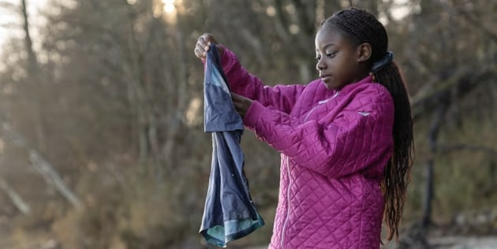
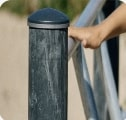
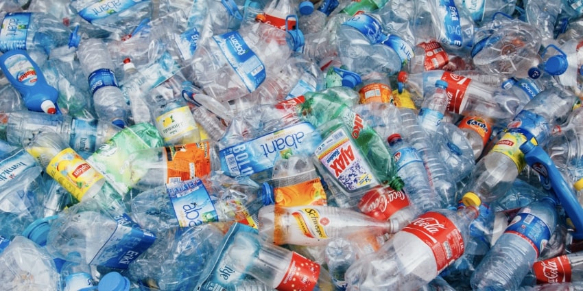
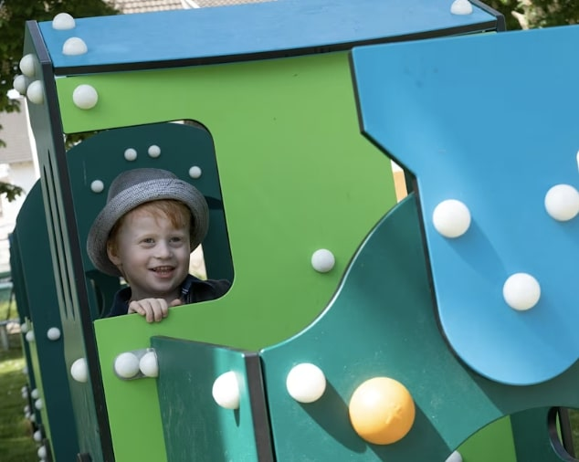
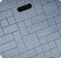
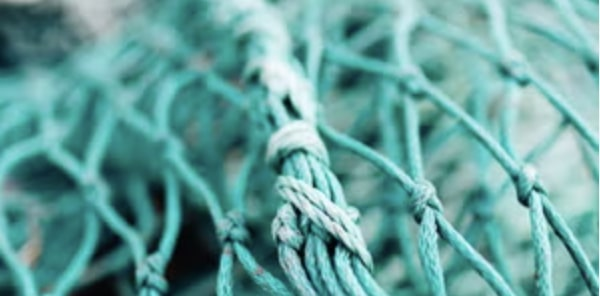
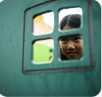
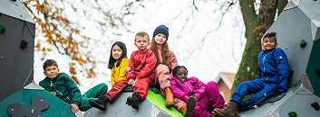

Let's Transform
Waste Into Play
What difference does it make that you sort your waste at home?
Let us show you, how we turn your waste into buildings blocks for laughter and learning for children and child-like spirits.

How does KOMPAN use my textile waste?
After you've recycled your old trousers and t-shirts they get shredded into fibres that can be used to make new clothes, carpets or for playground components - like we do at KOMPAN.

Like our TexMade Posts that are made from old textiles and recycled plastic bags

How does KOMPAN use my plastic waste?
Your used plastic- and shampoo bottles are sorted, cleaned and melted into small plastic balls that can be used in new materials. At KOMPAN we use your recycled plastic in several of our products.

Our EcoCare panels are made from >95% post consumer recycled waste

Our Decks are made from 75% post-consumer recycled waste

How does KOMPAN use old fishing nets?
Fishing nets are made of different kinds of plastic. With new technologies fishing nets can be collected and recycled in many ways. The nets get shredded into small pieces, get pelletised and transformed into new materials.

Like our colour teal that is made from recycled ocean waste like fishing nets & ropes.

You can transform waste into play
By sorting your waste correctly you make it possible for us to transform waste into play. Keep up the good work and join us on our journey towards a greener and better future for our children.